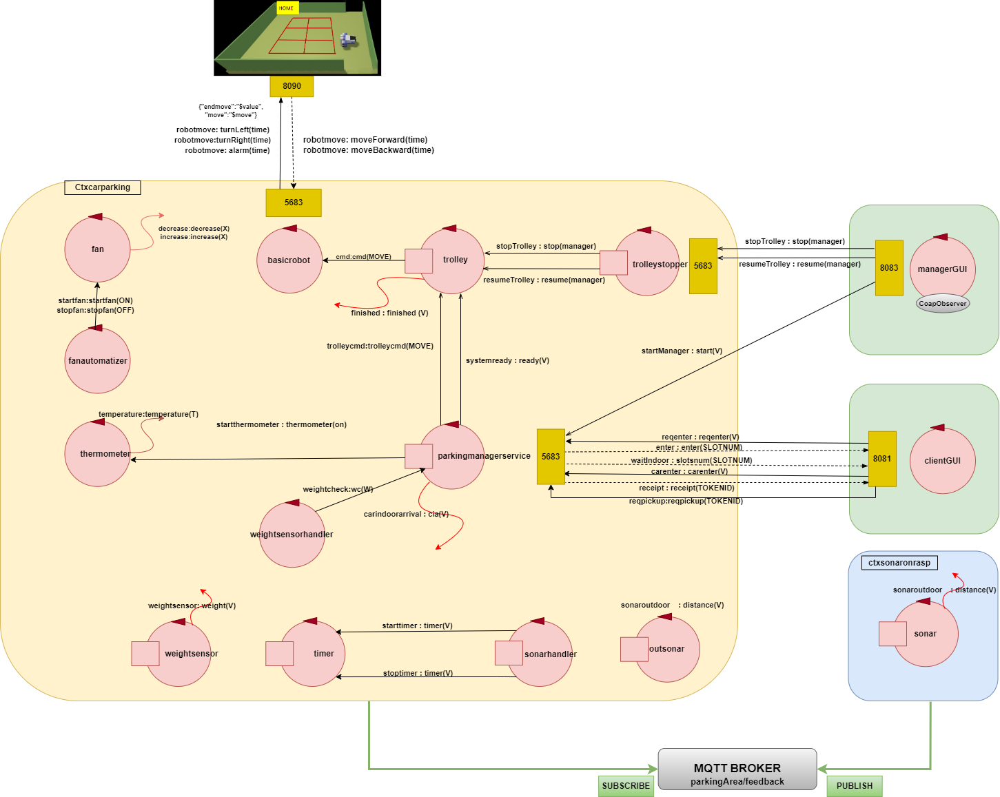

Introduction - SPRINT 4
In this document it will be analysed the fourth and final SPRINT of the project. In this phase we will extend previous SPRINT's model, adding the implementation of both Client GUI and ParkingManager GUI and of a real Sonar to OUTDOOR. The goal of this SPRINT, together with the previous ones, is to describe how and why the various components of the system have been implemented.
Problem analysis
As mentioned in the Introduction in this SPRINT, we will analyze the system during the last phase of prototyping. The goal version (with less functionality) of the final system.
Assumptions
In this version we define as definitive some assumptions made initially. Therefore follow simplified features will characterize also the obtained prototype.-
Thermometer andfan are components simulated by a software.These components are simulated because they are not yet physically available.WeightSensor is a component simulated by a software;This sensor are simulated because they are not yet physically available.Sonar is a real component, but it could be simulated as needed.it will be simulated for testing purpose, to do they in agile wayModel - SPRINT 4
parkingmanagerservice client Parking Phase
- It checks if there is at least one parking-slot available.
- After this check it is determined if reqenter can be accepted.
- It's received the request reqenter sended by a client.
-
[acceptIN] It's generated SLOTNUM and the related slot is marked as occupied. -
[informIN] If INDOOR-area is FREE and trolley status is not STOPPED the request is immediately elaborated sending to client the reply slotsnum : slotsnum ($SLOTNUM). Otherwise it's sended to client the reply waitIndoor : slotsnum ($SLOTNUM), and so client waits until the INDOOR-area become FREE or trolley status is not STOPPED. - It's received the request carenter sended by the client.
- parkingmanagerservive emits an event carindoorarrival, to notify that the client's car is in INDOOR-area.
-
[moveToIn] Commands are sent to the trolley so that it performs the movements to go from the current position to INDOOR - The weightsensor perceives carindoorarrival, and emits the event weight(CARWEIGHT).
- INDOOR is marked as occupied.
- It's expected the event finished emitted by trolley at the end of his path.
-
[receipt] It's generated the TOKENID related to SLOTNUM assigned to client and reply to him with receipt(TOKENID). -
[moveToSlotIn] If trolley is in INDOOR-area, Trolley takes the car and moves it to slot assigned to it. - When event finished is perceived, INDOOR is marked as free.
-
[moveToHome] If for a while no requests are received, commands are sent to the trolley for return to HOME. - If a new request arrives during returnig to HOME, it must be immediately handled.
- client opens clientGUI and clicks on
Enter request to notify his interest in entering his car in the parking-area. In this way it's sended to parkingmanagerservice a request reqenter. - Then, on clientGui, it's displayed SLOTNUM assigned to him.
- If SLOTNUM > 0 and INDOOR-area is FREE, client moves the car in front of INDOOR and clicks on CarEnter button, so it's sended the request carenter to parkingmanagerservive, otherwise client waits for the INDOOR-area to become FREE.
Car pick up phase - It checks if OUTDOOR is FREE and if trolley status is not STOPPED.
- After the checks it is determined if pickup can be elaborated.
-
[acceptOUT] It's received the dispatch pickup(TOKENID) sended by a client. -
[findSlot] It's obtained the CARSLOTNUM from TOKENID sended by client. -
[moveToSlotOut] Commands are sent to the trolley so that it performs the movements to go from the current position to CARSLOTNUM. - The slot corrisponding to CARSLOTNUM is marked as free.
-
[moveToOut] When it's perceives event finished and it's verified that trolley is in CARSLOTNUM, are sent commands to the trolley so that it performs the movements to go from CARSLOTNUM to OUTDOOR. - outsonar detects the presence of car in OUTDOOR-area.
- OUTDOOR-area status is marked as occupied and the countdown of the timer it's actived.
- Countdown will be cancelled when outsonar detects that there is no car in OUTDOOR-area.
- If timer (set to DTFREE) expires, it's emitted an event timeout.
-
[moveToHome] If for a while no requests are received, commands are sent to the trolley for return to HOME. - If a new request arrives during returnig to HOME, it must be immediately handled.
- client inserts his TOKENID in the related text box
and clicks on
Submit your TOKENID button. So it's sended a dispatch to parkingmanagerservice pickup(TOKENID) to notify his interest in in picking his car from parking-area. - When the car is in OUTDOOR-area, the client takes his car away, in this way outsonar detects that.
Parking-manager - Parking manager opens ManagerGUI where are displayed many informations about parking system and parking and picking operations.
- If detected temperature into the parking is over the limit, fan actives itself automatically.
While fan is active, Parking Manager can click on
STOP trolley button to stop trolley. - When the temperature comes back below the limits, Parking Manager can click on
RESUME trolley to resume it. - If it's emitted the alarm, caused by a car in OUTDOOR-area after time limit, Parking Manager is advised about it on his GUI.
In this SPRINT we have implemented the Client and the ParkingManager graphic interface. Therefore a real client can perform request from this GUI and a real Manager can supervise the parking status and at the occurrenceSTOPPING orRESUMING the Trolley work.
We also want to implement a real HC-SR04 Sonar which will allow to detect the effective presence or absence of a real car during the pickup phase.Client GUI
A graphical interface is required to allow the customer to make requests to the parking system. This GUI will be a service, probably implemented using Spring Boot. client using this GUI will can:
- forward to system a parking request.
- watch on inteface the value of assigned SLOTNUM
- forward a CarEnter request to notify system that the car is correctly positioning at INDOOR-area.
- watch on display TOKENID received by system.
- insert TOKENID in order to perform pickup request.
Manager GUI
For ParkingManager is required an interface that shows status of any component that compose our system. This GUI will be a service, probably implemented using Spring Boot.
Component that compose the interface of this GUI are:Regarding to Trolley
Trolley status : the status of the Trolley (IDLE ,WORKING orSTOPPED )STOP Trolley : under certain conditions permit to ParkingManager to manually STOP work of Trolley.RESUME Trolley : under certain conditions permit to ParkingManager to manually RESTART the Trolley. Trolley resumes its work from where it was interrupted.
Regarding to INDOOR and OUTDOOR
INDOOR status : here is indicated if the INDOOR isFREE or if it isBUSY OUTDOOR status : here is indicated if the OUTDOOR isFREE or if it isBUSY Current weight : show the weight of the car placed on INDOORAlarm status : show if the alarm is activated or not
Regarding to Environment
Temperature : actual environment temperatureFan status : indicates if the Fan is inWORKING status or inSTOPPED status.Environment Camera : there is also the possibility to have a camera that show the area of the parking.
Real Sonar
At this final stage, we introduce a real sonar in order to perform the tasks previously made by simulated one.
In particular, this sonar will be mounted on a physical device (e.g.: Raspberry, Arduino or similar) and its goal will be to send to the parkingmanagerservice many and periodical messages containing the value of distance detected. sonar will be distributed relative to the rest of the system, so to share the collected informations, we need to adopt a method to send mesages towards a external context, for example it would be possible to use aMQTT broker . Regarding the involvement of this device, as mentioned above, we received some components and documentation for its use from the customer.Logical Architecture
Our system ParkingManagerService it's composed by eight
actors in the ctxcarparking context and oneactor in the ctxsonaronrasp context. Everyactor provides a different service or simulating a certain component. Two separatedservices that represent the GUIs.Actors that we implement, will be of
QActor type.- ctxcarparking
- parkingmanagerservice
- weightsensor
- outsonar (mock-actor initialized only in case of not real sonar usage)
- weightsensorhandler
- outsonarhandler
- timer
- basicRobot
- trolley
- thermometer
- fan
- fanautomatizer
- trolleustopper
- ctxSonaronrasp
- sonar
- services
- clientGUI
- managerGUI

parkingmanagerservice:
This actor also triggers the activation of weightsensor and outsonar.
trolleystopper:
This actor has the goal to stop or resume trolley, forwarding to it a command directly received from ManagerGUI.weightsensor:
This mock-actor generates a random value that represents the weight of car in entrance and propagates it by emitting an event weight.
It starts the simulation when perceives thecarindoorarrival event.weighsensorhandler: weight andindoorStatus , this updating are perceived by ManagerGUI.outsonar:
This actor simulate a real sensor, it is instantiated only at the time when no real sonar is used. It start the simulation when perceivescaroutdoorarrival event emitting a certain distance smaller than a fixed threshold that means that the OUTDOOR-area is occupied.
When the outsonar detects thecarwithdrawn event,it emits a certain distance greater than a fixed threshold indicating that the car has been taken out of the OUTDOOR-area.sonarhandler: timer:
This actor is a simulator of a timer, it reacts to the startTimer and stopTimer messages sended by the sonarhandler and when the time will expire it updatesalarm resource, this updating is perceived by ManagerGUI, who will show an advice on his interface.sonar:
It's an actor in a different context and on a different device, probably (but not necessary) connected at same network of the system. It is the last actor of a pipe, in which every mock.actor has a differt task, like removing wrong data and showing in a log the detected measurements. This component will use a
MQTT broker in order to propagate the events (sonar:distance(V)) containing values obtained up to sonarhandler actor. basicrobot:
The model of the DDR-robot is related to the basicrobot given by the costumer: basicrobot2021.html.
The DDR-robot could be a VirtualRobot, Mbot or Nanobotrolley: thermometer:
This actor is activated immediately at the start of application. It alternates between two states:- increasing state: every TOT seconds increment the value of temperature, this to simulate the increasing of environment temperature during his activity until the fan starts to work and it goes in the decreasing state
- decreasing state: every TOT seconds decrement the value of temperature, this to simulate the decreasing of environment temperature while the fan is on until the fan stops and it goes in the increasing state
While it's in these states emit continuously an event, in which are the actual temperature of environmentfan: fanautomatizer:
This actor is responsible for automating the operation of the fan. For it's coherence with requirements, we have fixed a constant valuemaxTemp that indicates upper temperature limits of system operation.
It's necessary to decide a value that represent the optimal temperature at which fan can be stopped, we indicate this with constant valueminTemp . When temperature has reached the upper limit, fanautomatizer actor send to the fan a dispatch message startfan(ON), which has the function of starting the fan. On the other hand, when the temperature has returned to the working values, this is reported through an other dispatch stopfan(OFF) so that the fan stops working.ClientGUI:
It's the graphic interface at client's disposal, with which he can perform all preliminary actions in order parking and picking operations.
On it client can see SLOTNUM and TOKENID received from parking system. Using it client can also enter his TOKENID in order to start picking operations.ManagerGUI:
It's the graphic interface at ParkingManager's disposal. Using it He can monitor many values about parking and trolley status.
On thi GUI there are also two buttons to STOP and RESUME, when necessary, trolley operations. Test plans
During this final SPRINT, it will be necessary perform also
distributed-tests , in order to check the correct functioning of some remote components like clientGUI, managerGUI and sonar.TestPlans goals: - Ensure that new components work properly individually.
(unit testing)
Client GUI
This test consists of checking if the clientGUI exchange messages with parkingmanagerserive correctly.
ManagerGUI
We wanto to check if all target informations about parking system and trolley are correctly updated by managerGUI and if
STOP/RESUME buttons on it work properly. - Ensure that the workflow of the system meets a set of requirements
(integration testing) .
Workflow
During this test, it's verified the correct behaviour of the system.
In particular, it will be runned the entire system, including distributed components, and it will be checked if the system it's able to perform all parking and picking operations in the correct way.
Project
Now, we preoceed to the last project phase, during which it will be implemented the final version of all component, before releasing of prototype.
In particular, we will implement some solutions proposed during problem analysis but may be possible we adopt others solution, if necessary.
SONAR
SONAR sonaronrasp.qak QActor sonar context ctxsonaronrasp { [# lateinit var firstActorInPipe : ActorBasic #] State s0 initial { println("sonar START") discardMsg On solve( consult("sysRules.pl") ) solve( consult("sonaronrasp.pl") ) solve( showSystemConfiguration ) firstActorInPipe = sysUtil.getActor("sonardatasource")!! firstActorInPipe. subscribeLocalActor("datacleaner"). subscribeLocalActor("datalogger"). subscribeLocalActor("sonar"). subscribeLocalActor( "sonar") #] forward sonardatasource -m sonarstart : sonarstart(ok) } delay 5000 } Transition t0 whenEvent sonar -> sendSonarData State sendSonarData{ printCurrentMessage onMsg( sonar : distance(D) ){ [# val D = payloadArg(0) #] emit sonaroutdoor : distance($D) } } Transition t0 whenEvent sonar -> sendSonarDataThis QAktor is in another context ctxsonaronrasp which runs on a remote device, a Raspberry Pi that is euipped with a sonar HCSR04. The PORT of this contex is 8028.
The implementation of this component is obtained starting from another component already at our disposal, into the project it.unibo.rasp2021.
Before emitting sonaroutdoor event, which will be perceives by sonarhandler QAktor on ctxcarparking, the data collected by sonar are taken, cleaned and showed, respectively thanks to three mock-actor: sonardatasource, datalogger and datacleaner. This kind of structure can be inteded as Pipeline Design Pattern.
The emitted events can be perceived also in another context because this context is registred on a topic of a MTTQ Broker, in particular:
mqttBroker "broker.hivemq.com" : 1883 eventTopic "parkingArea/feedback"
Manager GUI
This graphic inteface, like the client's one, is created using Spring Boot, referring to an existing project sonarguispring.
MANAGER GUI ParkManagerGui HIController.kt
@Controller class HIController { @Value("\${human.logo}") var appName: String? = null var systemStarted = false val url = "coap://localhost:5683" var coapForGUI = CoapSupport(url, "ctxcarparking/guiupdater") @Autowired var simpMessagingTemplate : SimpMessagingTemplate? = null init{ SenderToPark.start(this) sysUtil.colorPrint("HumanInterfaceController | INIT", Color.GREEN) coapForGUI.observeResource(ParkingCoapHandler(this) ) } @GetMapping("/") fun entry(model: Model): String { model.addAttribute("arg", appName ) sysUtil.colorPrint("HIController | entry model=$model", Color.GREEN) SenderToPark.send("start") systemStarted = true return "ManagerGui" } @PostMapping("/stop") fun sendStop(model: Model) : String { SenderToPark.send("stop") return "ManagerGui" } @PostMapping("/resume") fun sendResume(model: Model) : String { SenderToPark.send("resume") return "ManagerGui" } }This class represents the controller of our Spring App for ManagerGUI, which follow MVC pattern.
Initially, it's created coapForGUI, which will observe the updating of guiUpdater in ctxParkigservice.
After loading of View, it's sended to parkingmanagerservice a dispatch startManager, so the system starts updating resources.
There are also two @PostMapping that have the aim to send stop/resume when the Manager presses onSTOP Trolley orRESUME Trolley buttons. The messages that ManagerGUI sends to parkingmanagerservice are sending via WS, opened and managed by object SenderToPark.kt.ParkingCoapHandler.kt
class ParkingCoapHandler(val controller: HIController) : CoapHandler { override fun onLoad(response: CoapResponse) { val content: String = response.getResponseText() sysUtil.colorPrint("ParkingCoapHandler | response content=$content", Color.GREEN ) val resourceName = content.substringAfter("\"","-").substringBefore("\"","-") try{ val jsonContent = JSONObject(content) when(resourceName) { "indoorStatus" -> { val indoorRep = ResourceRep("indoorStatus" + HtmlUtils.htmlEscape(jsonContent.getString("indoorStatus"))) sysUtil.colorPrint("ParkingCoapHandler | indoor value=${indoorRep.content}", Color.BLUE) ValuesForGui.indoor = indoorRep controller.simpMessagingTemplate?.convertAndSend(WebSocketConfig.topicForClient, indoorRep) } "outdoorStatus" -> { val outdoorRep = ResourceRep("outdoorStatus" + HtmlUtils.htmlEscape(jsonContent.getString("outdoorStatus"))) sysUtil.colorPrint("ParkingCoapHandler | outdoor value=${outdoorRep.content}", Color.BLUE) ValuesForGui.outdoor = outdoorRep controller.simpMessagingTemplate?.convertAndSend(WebSocketConfig.topicForClient, outdoorRep) } [...]An instance of this class is passed as argument to the constructor of coapForGUI into the HIController.
It has a method onLoad, in which are handled several type of updating perceived by CoapObserver. In particular, for each kind of resouce updated, it's called a methodconvertAndSend() of a simpMessagingTemplate, initialized into the controller, which sends to browser via WebSocket the current resource value, on a specific topic/topic/infodisplay , specified in WebSocketConfig.kt.
The updating of resources sending via WebSocket to browser are handled by app.js, in which is opened a socket on the same STOMP end-point path (/it-unibo-iss) used in WebSocketConfig. Then the client are subscibed to same STOMP topic (/topic/infodisplay) updated by the server.
At the end, for each kind of messages sent on Socket is modified a different field of HTML file ManagerGui.htmlGUIUPDATER guiUpdater.kt class guiUpdater (name : String ) : ActorBasic( name ) { @kotlinx.coroutines.ObsoleteCoroutinesApi @kotlinx.coroutines.ExperimentalCoroutinesApi override suspend fun actorBody(msg: ApplMessage) { if( msg.msgId() == "updateGui" && msg.msgType() == "dispatch") { update(msg.msgContent().replace("'","")) } } fun update(res : String){ val resourceName = res.substringBefore("(","-") val resourceValue = res.substringAfter("(","-").substringBefore(")","-") updateResourceRep( "${convertToJSON(resourceName, resourceValue)}") } fun convertToJSON(name: String, value: String) : String { val jsonRes = "{\"$name\":\"$value\"}" return jsonRes } }During the project phase, it has proved necessary to have only a QAktor with the goal of updating all resources, so that the managerGUI could detect them.
So, whenever a component modifies any resource, a dispatch updateGui:resourceName(VALUE) is sent to guiUpdater mock-actor.
Then, this actor elaborates received message, converting it in JSON format and use it to update the corresponding resource.
TROLLEYSTOPPER parkingservice.qak QActor trolleystopper context ctxcarparking{ State s0 initial { }Goto work State work{ }Transition t0 whenMsg stopTrolley -> stopped State stopped{ forward trolley -m stopTrolley : stop(manager) } Transition t0 whenMsg resumeTrolley -> resumed State resumed{ forward trolley -m resumeTrolley : resume(manager) }Goto work }This is a QAktor which as an intermediary between managerGUI and trolley. Its task is to avoid that managerGUI sends stopTrolley ans resumeTrolley messages directly to Trolley.
So, trolleystopper receives this kind of dispatches from managerGUI and forward them to trolley.Client GUI
CLIENTGUI ClientGui
HumanInterfaceController.kt@GetMapping("/") //defines that the method handles GET requests. fun entry(model: Model): String { model.addAttribute("arg", appName) model.addAttribute("advise", "Welcome in the best automated parking ever, Click on \"Enter Request to start\"") println("HumanInterfaceController | entry model=$model") if(cnt > 5){ model.addAttribute("disableReqEnter", "false") model.addAttribute("disableCarEnter", "true") model.addAttribute("disablePickup", "true") }else{ model.addAttribute("disableReqEnter", "false") model.addAttribute("disableCarEnter", "true") model.addAttribute("disablePickup", "false") } return "clientRobotGui" } @GetMapping("/model") @ResponseBody //With this annotation, the String returned by the methods is sent to the browser as plain text. fun homePage( model: Model) : String{ model.addAttribute("arg", appName) sysUtil.colorPrint("HumanInterfaceController | homePage model=$model", Color.GREEN) return String.format("HumanInterfaceController text normal state= $applicationModelRep" ); } @PostMapping("/reqenter") fun req_enter(viewmodel : Model) : String { sysUtil.colorPrint("HumanInterfaceController | requestType: reqenter ", Color.GREEN) ClientResource.send("reqenter") var advise = "Please wait until your car is parked" viewmodel.addAttribute("advise", advise) viewmodel.addAttribute("disableReqEnter", "true") viewmodel.addAttribute("disableCarEnter", "false") viewmodel.addAttribute("disablePickup", "true") return "clientRobotGui" } @PostMapping("/carenter") fun car_enter (model: Model) : String { sysUtil.colorPrint("HumanInterfaceController | requestType: carenter ", Color.GREEN) ClientResource.send("carenter") var advise = "Please wait until your car is parked" model.addAttribute("advise", advise) model.addAttribute("disableReqEnter", "true") model.addAttribute("disableCarEnter", "true") model.addAttribute("disablePickup", "false") return "clientRobotGui" } @PostMapping("/pickup") fun pickup(model: Model, @RequestParam(name = "token") token : String) : String { sysUtil.colorPrint("HumanInterfaceController | requestType: pickup ", Color.GREEN) ClientResource.send("pickup", token) //ClientResource.changeAdvise("Token sended: $token") var advise = "Token sended: $token. Wait untill yout car is in OUTDOOR area.\nGoodbye" model.addAttribute("advise", advise) cnt++ if(cnt > 5){ model.addAttribute("disableReqEnter", "false") model.addAttribute("disableCarEnter", "true") model.addAttribute("disablePickup", "true") }else{ model.addAttribute("disableReqEnter", "false") model.addAttribute("disableCarEnter", "true") model.addAttribute("disablePickup", "false") } return "clientRobotGui" }This class represent controller of ClientGUI. Initally a ClientResource instance is created, and his goal is to prepare messages that has to be forwarded to parkingManagerService.
For each phase of parking/picking process there are a @PostMapping with the aim to send request related to the button that the Client presses. The messages that ClientGUI sends to parkingmanagerservice are sending via WS, opened and managed by object Client.
On picking button a control has been inserted with the aim to check how many time a Client has pressed this button. This check is usefull to prevent a malicious use of the GUI. In case of a client has pressed the pickup button more than 5 times with wrong TOKENID it will be disabled for this client. Some check are also performed on the other button in order to avoid wrong behaviour from clients.ClientResource.kt fun send(type: String) { when (type) { "reqenter" -> clientThread!!.forward(reqenter) "carenter" -> clientThread!!.forward(carenter) } } fun send(type: String, token: String) { when (type) { "reqenter" -> clientThread!!.forward(reqenter) "carenter" -> clientThread!!.forward(carenter) "pickup" -> clientThread!!.forward(pickupmsg.replace("TOKENID", token)) } }ClientResource is a companion object with the goal to prepare messages that have to be sended by Client via WS.Client.kt while (!Thread.currentThread().isInterrupted) { input = BufferedReader(InputStreamReader(socket!!.getInputStream())) val message = input!!.readLine() val content = message.substringAfter("(",message).substringBefore(")",message) var lines = content.split(",").toTypedArray(); val id = lines[0] val type = lines[1] val sender = lines[2]; val dest = lines[3] val msg = lines[4]+")" val msgArg = msg?.substringAfter("(",msg)?.substringBefore(")",msg) println("%%%%% Reveived: $message") if(id == "slotsnum"){ val jsonMsg = "{\"slotnum\":\"$msgArg\"}" var jsonContent = JSONObject(jsonMsg) val slotRep = ResourceRep("" + HtmlUtils.htmlEscape( "s"+jsonContent.getString("slotnum"))) println("slot: $msgArg") TimeUnit.MILLISECONDS.sleep(500L) controller.simpMessagingTemplate?.convertAndSend(WebSocketConfig.topicForClient, slotRep) } else if(id == "receipt"){ println("token: $msgArg") val jsonMsg : String = "{\"tokenid\":\"$msgArg\"}" var jsonContent : JSONObject = JSONObject(jsonMsg) val tokenRep = ResourceRep("" + HtmlUtils.htmlEscape( "t"+jsonContent.getString("tokenid"))) controller.simpMessagingTemplate?.convertAndSend(WebSocketConfig.topicForClient, tokenRep) } else if(id == "waitIndoor"){ val jsonMsg = "{\"waitIndoor\":\"$msgArg\"}" var jsonContent = JSONObject(jsonMsg) val waitIndoorRep = ResourceRep("" + HtmlUtils.htmlEscape( "s"+jsonContent.getString("waitIndoor"))) println("waitIndoor: $msgArg") TimeUnit.MILLISECONDS.sleep(500L) controller.simpMessagingTemplate?.convertAndSend(WebSocketConfig.topicForClient, waitIndoorRep) } } /*---------------------------------------------------------------------------------------------------*/ fun forward(message: String?) { Thread { try { if (null != socket) { val out = PrintWriter( BufferedWriter( OutputStreamWriter(socket!!.getOutputStream())), true ) out.println(message) println(message) } } catch (e: Exception) { e.printStackTrace() } }.start() }In Client class is created and handled a WS connection, there are one function for send messages on this WS and one to receive and give informations from the reply.
When a reply is received, informations is extracted and depending onid value a different actions could be performed. For example when a slotnum reply is received, it is used same tecnique of ManagerGUI to update the GUI with current value via WebSocket.Testing
For ClientGUI and ManagerGUI is used a tool for for web automation and web testing based on JS, called
PlayWright .
In particular this kind of test are runned with command below.npx playwright test --config=my.config.js
TestPlans goals: Client GUI
This test consists of checking if the clientGUI exchange messages with parkingmanagerserive correctly.
const { test, expect } = require('@playwright/test'); test('CLIENT GUI test', async ({ page }) => { await page.goto('http://localhost:8081/'); await page.waitForTimeout(3000) await page.click('button:has-text("Enter Request")'); const slot = await page.locator('//*[@id="infoDisplay"]'); await expect(slot).toContainText('SLOTNUM:'); await page.waitForTimeout(4000) await page.click('button:has-text("CarEnter Request")'); //carenter await page.waitForTimeout(8000) const value = await page.evaluate(() => document.getElementById("infoDisplay").textContent) token = value.slice(7) const tok = await page.locator('//*[@id="infoDisplay"]'); await expect(tok).toContainText('TOKEN:'); await page.fill('//*[@id="tokenid"]', token); await page.waitForTimeout(3000) await page.click('button:has-text("Submit your TOKENID")'); const after = await page.locator('//*[@id="adv"]'); await expect(after).toContainText('Token sended'); });During this test, it's opened the page https//:localhost:8081 of browser, then are automatically performed all the action necessary to a parking and a picking operation.
It's verified also if clientGUI receives and shows correctly SLOTNUM and TOKENID values.ManagerGUI
We wanto to check if
STOP/RESUME buttons work properly.const { test, expect } = require('@playwright/test'); test('ManagerGUI test', async ({ page }) => { await page.goto('http://localhost:8083'); await page.waitForTimeout(1000) const stopbtn = await page.locator('button:has-text("STOP Trolley")'); const resumebtn = await page.locator('button:has-text("RESUME Trolley")'); const trolleystatus = await page.locator('//*[@id="statusDisplay"]') //trolleyStatus const temp = await page.locator('//*[@id="tempDisplay"]') //temperature await page.waitForFunction(() => { return document.querySelector('#stopbtn').hasAttribute('disabled')==false }); await page.waitForTimeout(500) stopbtn.click() await page.waitForTimeout(1000) await expect(trolleystatus).toContainText('STOPPED') await page.waitForFunction(() => { return document.querySelector('#resumebtn').hasAttribute('disabled')==false }); await page.waitForTimeout(500) await resumebtn.click() await page.waitForTimeout(1000) await expect(trolleystatus).not.toContainText('STOPPED') });During this test, it's opened the page https//:localhost:8081 of browser, then it's waited until STOP button is enabled, so it is pressed. Then the value of Trolley status is verified: it has to be "STOPPED".
As soon as the RESUME button becomes enabled, also it's pressed and verified if, after that, Trolley status is different by "STOPPED" (IDLE or WORKING). - Ensure that the workflow of the system meets a set of requirements
(integration testing) .
Workflow
During this test, it's verified the correct behaviour of the system.
In particular, it will be runned the entire system, including distributed components, and it will be checked if the system it's able to perform all parking and picking operations in the correct way.WORKFLOW TEST PLAN TestPlan.kt clientactor!!.forward("startManager","system(ready)","parkingmanagerservice") delay(5000) var indoorStatus = channelForObserver.receive().substringAfter("(","-").substringBefore(")","-") println("TEST indoorAtStart: $indoorStatus") assertTrue(indoorStatus.equals("FREE")) var outdoorStatus = channelForObserver.receive().substringAfter("(","-").substringBefore(")","-") println("TEST outdoorStatus: $outdoorStatus") assertTrue(outdoorStatus.equals("FREE")) var robotPosition = channelForObserver.receive().substringAfter("(","-").substringBefore(")","-") println("TEST robotPosition: $robotPosition") assertTrue(robotPosition.equals("0,0")) delay(3000) clientactor!!.request("reqenter","reqenter(bob)","parkingmanagerservice") var slotnum = channelForObserver.receive().substringAfter("(","-").substringBefore(")","-").toInt() println("TEST slotnum: $slotnum") assertTrue(slotnum > 0 && slotnum < 7) delay(3000) clientactor!!.request("carenter","carenter(ok)","parkingmanagerservice") var weight = channelForObserver.receive().substringAfter("(","").substringBefore(")","").toInt() println("TEST weight: $weight") assertTrue(weight > 0) println("TEST weight: SUCCESS") indoorStatus = channelForObserver.receive().substringAfter("(","").substringBefore(")","") println("TEST indoorStatus: $indoorStatus") assertTrue(indoorStatus.equals("BUSY")) println("TEST indoorStatus SUCCESS") var result = channelForObserver.receive() robotPosition = result.substringAfter("(","").substringBefore(")","") println("TEST robotPosition: $robotPosition") assertTrue(robotPosition.equals("6,0")) println("TEST robotPosition SUCCESS") result = channelForObserver.receive() indoorStatus = result.substringAfter("(","").substringBefore(")","") println("TEST indoorStatus: $indoorStatus") assertTrue(indoorStatus.equals("FREE")) println("TEST indoorStatus SUCCESS") var receipt = channelForObserver.receive().substringAfter("(","-").substringBefore(")","-").toInt() println("TEST receipt: $receipt") assertTrue(receipt >= 11) result = channelForObserver.receive() robotPosition = result.substringAfter("(","").substringBefore(")","") println("TEST robotPosition: $robotPosition") assertTrue(robotPosition.equals("1,1")) delay(2000) var home = channelForObserver.receive().substringAfter("(","-").substringBefore(")","-") println("TEST moving to HOME: $home") assertTrue(home.equals("HOME")) println("FINISH PARKING OP") delay(4000) clientactor!!.request("pickup","pickup($receipt)","parkingmanagerservice") var carslotnum = channelForObserver.receive() var carslot = carslotnum.substringAfter("(","-").substringBefore(")","-").toInt() println("TEST carslotnum: $carslot") assertTrue(carslot.equals(slotnum)) println("TEST carslotnum SUCCESS") result = channelForObserver.receive() robotPosition = result.substringAfter("(","").substringBefore(")","") println(""+ robotPosition) assertTrue(robotPosition.equals("1,1")) println("TEST robotPosition 1: $robotPosition") result = channelForObserver.receive() robotPosition = result.substringAfter("(","").substringBefore(")","") assertTrue(robotPosition.equals("6,4")) println("TEST robotPosition 2: $robotPosition") outdoorStatus = channelForObserver.receive().substringAfter("(","").substringBefore(")","") assertTrue(outdoorStatus.equals("BUSY")) println("TEST outdoorStatus: $outdoorStatus") outdoorStatus = channelForObserver.receive().substringAfter("(","").substringBefore(")","") assertTrue(outdoorStatus.equals("FREE")) println("TEST outdoorStatus: $outdoorStatus") home = channelForObserver.receive().substringAfter("(","-").substringBefore(")","-") assertTrue(home.equals("HOME")) println("TEST moving to HOME: $home") println("FINISH PICKING OP") } }In this test it's checked, step by step, all values during parking and picking process. Values that it's checked are: indoorStatus : in different situations it is checked if the INDOOR status isFREE orBUSY outdoorStatus : in different situations it is checked if the OUTDOOR status isFREE orBUSY slotsFree : it is checked the actual free parking slots of the entire systemrobotPosition : it is checked that the final position of the Trolley after a work is correctslotnum : it is checked the SLOTNUM that which has been assigned to the current clientreceipt : it is checked that its value is between10000 and69999 home : it is checked that Trolley has effectively reached itsHOME carslotnum : it is checked if the TOKEID provide by client piking request is equal to the one assigned to he.alarm : it is checket if after 10 seconds the OUTDOOR is not yetFREE that the alarm has been correctly activated.
Deployment
The deployment of SPRINT 4 consists in a release on a Github repository.Every component are deployed with a runnable distribution in order to obtain a stand alone application.
-
launch_bat.vbs
-
starter.bat
- robot.bat
- it.unibo.ParkManagerService_s4.bat
- ClientGui.main.jar
- ParkManagerGui.main.jar
-
starter.bat